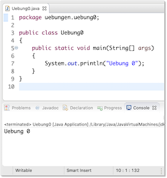

Übungen¶
Übungsblätter (wochenweise)¶
Übung 0
- Installieren Sie sich - falls noch nicht geschehen - eine Java-Entwicklungsumgebung (siehe Java).
- Installieren Sie sich die IDE Ihrer Wahl (siehe IDE). In den Vorlesungen und Übungen verwende ich Eclipse und beschreibe die Schritte auch für Eclipse.
- Starten Sie Eclipse durch Doppelklick auf das Programmsymbol.
- Erstellen Sie einen Workspace (Arbeitsbereich) in einem gewünschten Ordner (z. B.
Prog1) im Dateisystem. Achten Sie darauf, dass Sie Schreibrechte in diesem Ordner besitzen. - Anlegen eines Projektordners:
- Auswahl im Menü
File-->New-->Java Project. - Eingabe des
Project name:Name des Projektes (z.B.WiSe25). Klicken auf den ButtonFinish. - Das Fenster
New module-info.javakönnen Sie einfach mitCreatebestätigen.
- Auswahl im Menü
- Erstellen eines neuen Packages (Paketes):
- Öffnen der Projektmappe im
Package Explorer. - Auswahl des Ordners
srcmit der rechten Maustaste. - Auswahl des Menüpunktes
New --> Package. - Geben Sie folgenden Paketnamen ein (Paketnamen werden kleingeschrieben)
uebungen.uebung0(Achten Sie auf den Punkt und dass Sie alles zusammen schreiben).
- Öffnen der Projektmappe im
- Erstellen einer neuen Klasse:
- Öffnen der Projektmappe im Package Explorer.
- Auswahl des Paketes (
uebungen.uebung0) mit der rechten Maustaste. - Auswahl des Menüpunktes
New --> Class. - Eingabe des Namens, der gleichzeitig der Klassen- und Dateiname ist:
Uebung0. Klassennamen werden immer groß geschrieben. - Setzen des Häkchens bei
public static void main(). (Sollten Sie vergessen haben, das Häkchen zu setzen, dann ist die Klasse, nachdem SieFinishgedrückt haben, leer. Setzen Sie dann den Cursor zwischen die beiden geschweiften Klammern{ }, geben dannmainein und drücken die Ctrl+Leer-Tasten und anschließend Enter. Dann erscheint diemain()-Methode) - Klicken auf den Button
Finish.
- In die
main()-Methode (zwischen die geschweiften Klammern{und}geben Sie ein:System.out.println("Uebung 0"));. - Drücken Sie dann entweder auf den -Button oder wählen Sie aus dem Menü
Run --> Runoder drücken Sie shift+command+f11. In derConsolein Ihrer IDE (in Eclipse unten) erscheintUebung 0.

Success
Fertig! Ihre Entwicklungsumgebung ist bereit! Wir können loslegen. 
Übung 1
- Erstellen Sie ein package
uebungen.uebung1. - Erstellen Sie in diesem package eine Klasse
Uebung1mitmain()-Methode. - Deklarieren und initialisieren Sie in der
main()-Methode jeweils eine Variable mit dem Datentypint,long,char,byte,short,float,double,booleanundString. Geben Sie alle Werte einzeln durch Aufruf derprintln()-Methode aus. Erzeugen Sie dabei folgende Ausgabe (Werte nur Beispiele): - Setzen Sie den Wert Ihrer
int-Variablen auf2147483647. Geben Sie den Wert auf der Konsole aus, z.B.:
Versuchen Sie nun den Wert auf2147483648zu setzen. Was passiert? Warum? - Wiederholen Sie das gleiche mit einer
long-Variablen. - Weisen Sie Ihrer
char-Variablen den Wert65zu. Geben Sie den Wert Ihrerchar-Variablen aus. Was passiert? Warum? -
Gegeben ist die folgende Klasse:
public class PrinterClass { public static void main(String[] args) { System.out.print("answer="); System.out.println(42); } }Was wird auf der Konsole ausgegeben?
b) c)
a)
Eine mögliche Lösung für Übung 1
package uebungen.uebung1;
public class Uebung1
{
public static void main(String[] args)
{
int in = 123;
long lo = 456789;
char ch = 'a';
byte by = 127;
short sh = 32767;
float fl = 4.23f; // f notwendig
double d1 = 6.98;
boolean b1 = true;
String s1 = "Hallo!";
System.out.println(" --- Aufgabe 3 -------");
System.out.println();
System.out.print("Wert vom Typ int : ");
System.out.println(in);
System.out.print("Wert vom Typ long : ");
System.out.println(lo);
System.out.print("Wert vom Typ char : ");
System.out.println(ch);
System.out.print("Wert vom Typ byte : ");
System.out.println(by);
System.out.print("Wert vom Typ short : ");
System.out.println(sh);
System.out.print("Wert vom Typ float : ");
System.out.println(fl);
System.out.print("Wert vom Typ double : ");
System.out.println(d1);
System.out.print("Wert vom Typ boolean : ");
System.out.println(b1);
System.out.print("Wert vom Typ String : ");
System.out.println(s1);
System.out.println();
System.out.println(" --- Aufgabe 4 -------");
System.out.println();
in = 2147483647;
System.out.println("Wert vom Typ int : " + in );
//in = 2147483648; // Compilerfehler out of range
System.out.println();
System.out.println(" --- Aufgabe 5 -------");
System.out.println();
lo = 2147483647;
System.out.println("Wert vom Typ long : " + lo );
lo = 2147483648L; // L notwendig, da 2147483648 kein int
System.out.println("Wert vom Typ long : " + lo );
System.out.println();
System.out.println(" --- Aufgabe 6 -------");
System.out.println();
ch = 65;
System.out.println(ch); // A
// 7 a)
}
}
Übung 2
- Erstellen Sie ein package
uebungen.uebung2. - Erstellen Sie in diesem package eine Klasse
Uebung2mitmain()-Methode. -
Deklarieren Sie in
main()2int-Variablen und geben Sie Ihnen Werte (die folgenden Werte17und4sind nur Beispiele). Erzeugen Sie nun unter Verwendung dieser Variablen folgende Ausgabe (bei anderen Werten natürlich entsprechend anders):
-
Erzeugen Sie nun stattdessen folgende Ausgabe:
-
Beachten Sie, dass Sie den Wert für den Quotienten und für den Rest für
3.und4.nur einmal ermitteln sollen. -
Deklarieren Sie sich eine
boolean-Variable. Der Wert der Variablen solltruesein, wenn das Produkt der beidenint-Variablen aus3.gerade ist undfalse, wenn es ungerade ist. -
Probieren Sie die Division
100/3in den folgenden Datentypen:int,float,double. Was stellen Sie fest? -
Prüfen Sie, ob die letzte Ziffer von 2
int-Variablen gleich ist (danntrue, sonstfalse). -
Zusatz: Gegeben sei eine Anzahl von Stunden. Geben Sie aus, wieviel ganze Tage in dieser Anzahl enthalten sind, z.B.
Wieviele Stunden bleiben übrig?
Eine mögliche Lösung für Übung 2
package uebungen.uebung2;
public class Uebung2
{
public static void main(String[] args)
{
System.out.println();
System.out.println("-------------------- 3. -------------------------");
System.out.println();
int i1 = 77;
int i2 = 5;
int quotient = i1/i2;
int rest = i1%i2;
System.out.print(i1 + " geteilt durch " + i2 + " ergibt " + quotient + ". ");
System.out.println("Es bleibt ein Rest von " + rest + ".");
System.out.println();
System.out.println("-------------------- 4. -------------------------");
System.out.println();
System.out.println(i1 + "/" + i2 + " = " + quotient);
System.out.println(i1 + " mod " + i2 + " = " + rest);
System.out.println();
System.out.println("-------------------- 6. -------------------------");
System.out.println();
int product = i1 * i2;
boolean productIsEven = product % 2 == 0;
boolean productIsOdd = !productIsEven; // product % 2 == 1
System.out.println(product + " ist gerade ? " + productIsEven);
System.out.println(product + " ist ungerade ? " + productIsOdd);
System.out.println();
System.out.println("-------------------- 7. -------------------------");
System.out.println();
System.out.println("int : " + 100/3); // int
System.out.println("float : " + 100.0f/3.0f); // float
System.out.println("float : " + 100f/3f); // float
System.out.println("double : " + 100.0/3.0); // double
System.out.println("double : " + 100.0/3); // double
System.out.println("double : " + 100/3.0); // double
System.out.println();
System.out.println("-------------------- 8. -------------------------");
System.out.println();
int lastDigitOfi1 = i1 % 10;
int lastDigitOfi2 = i2 % 10;
boolean lastDigitsAreEqual = (lastDigitOfi1 == lastDigitOfi2);
System.out.println();
System.out.println("-------------------- 9. -------------------------");
System.out.println();
int hours = 34567;
final int HOURS_ONE_DAY = 24; // Konstante
int days = hours/HOURS_ONE_DAY;
System.out.println("In " + hours + " Stunden sind " + days + " ganze Tage enthalten.");
System.out.println("Zieht man von den " + hours + " Stunden die " + days + " Tage ab, "
+ "bleiben " + hours%oneDay + " Stunden übrig.");
}
}
Übung 2a
- Verwenden Sie erneut die Klasse
Uebung2aus dem Paketuebungen.uebung2(oder Sie erstellen sich ein Paketuebungen.uebung2.aund darin eine KlasseUebung2a). -
Schreiben Sie eine Methode
Diese Methode soll folgende Ausgabe auf die Konsole erzeugen, z.B. fürprintIntDivision(7, 4);die Ausgabe z.B. fürprintIntDivision(17, 4);die Ausgabe -
Schreiben Sie zwei Methoden
Rufen Sie diese Methoden in derpublic static int getQuotient(int nr1, int nr2) {} // und public static int getRemainder(int nr1, int nr2) {}main()-Methode auf generieren mit den Aufrufen und unter Verwendung derprintln()-Methode folgende Ausgaben: -
Besitzen die folgende Methodenaufrufe einem Wert? Wenn ja, welcher?
printIntDivision(17, 4);getQuotient(17,4);getRemainder(17,4);
-
Können wir die Methoden
getQuotient(int nr1, int nr2)undgetRemainder(int nr1, int nr2)auch in derprintIntDivision(int nr1, int nr2)-Methode verwenden/aufrufen? Wenn ja, wie? - Schreiben Sie eine Methode
lastDigitsAreEqual(int nr1, int nr2), die eintruezurückgibt, wennnr1undnr2dieselbe letzte Ziffer haben undfalsesonst. - Schreiben Sie eine Methode
isEven(int nr1), die eintruezurückgibt, wennnr1eine gerade Zahl ist. Schreiben Sie eine MethodeisOdd(int nr1), die eintruezurückgibt, wennnr1eine ungerade Zahl ist. Verwenden Sie inisOdd(int nr1)die MethodeisEven(int nr1). - Schreiben Sie eine Methode
getDays(int hours), die für eine gegebene Stundenanzahlhourszurückgibt, wieviele ganze Tage diese Stunden entsprechen. Schreiben Sie eine MethodegetRemainingHours(int hours), die für eine gegebene Stundenanzahlhourszurückgibt, wieviele Stunden noch verbleiben, wenn man die ganzen Tage darin abzieht. Erstellen Sie inmain()mit diesen Methoden und derprintln()-Methode folgende Ausgaben auf der Konsole (Beispielwerte): Wieviele Stunden bleiben übrig?
Eine mögliche Lösung für Übung 2a
package uebungen.uebung2a;
public class Uebung2a
{
public static void printIntDivision(int nr1, int nr2)
{
// int quotient = nr1 / nr2;
int quotient = getQuotient(nr1, nr2);
// int rest = nr1 % nr2;
int rest = getRemainder(nr1, nr2);
System.out.print(nr1 + " geteilt durch " + nr2 + " ergibt " + quotient + ".");
System.out.println(" Es bleibt ein Rest von " + rest + ".");
}
public static int getQuotient(int nr1, int nr2)
{
return nr1 / nr2;
}
public static int getRemainder(int nr1, int nr2)
{
return nr1 % nr2;
}
public static boolean lastDigitsAreEqual(int nr1, int nr2)
{
int lastDigitOfNr1 = nr1 % 10;
int lastDigitOfNr2 = nr2 % 10;
return (lastDigitOfNr1 == lastDigitOfNr2) ||
(lastDigitOfNr1 == -lastDigitOfNr2);
}
public static boolean isEven(int nr)
{
return nr % 2 == 0;
}
public static boolean isOdd(int nr)
{
return !isEven(nr);
}
public static int getDays(int hours)
{
final int HOURS_ONE_DAY = 24;
return hours / HOURS_ONE_DAY;
}
public static int getRemainingHours(int hours)
{
final int HOURS_ONE_DAY = 24;
return hours % HOURS_ONE_DAY;
}
public static void main(String[] args)
{
System.out.println();
System.out.println("--------------- 2. ----------------");
System.out.println();
printIntDivision(17, 4);
printIntDivision(16, 4);
printIntDivision(16, 17);
System.out.println();
System.out.println("--------------- 3. ----------------");
System.out.println();
int nr1 = 17;
int nr2 = 4;
System.out.println(nr1 + "/" + nr2 + " = " + getQuotient(nr1, nr2));
System.out.println(nr1 + " mod " + nr2 + " = " + getRemainder(nr1, nr2));
nr1 = 15;
nr2 = 5;
System.out.println(nr1 + "/" + nr2 + " = " + getQuotient(nr1, nr2));
System.out.println(nr1 + " mod " + nr2 + " = " + getRemainder(nr1, nr2));
System.out.println();
System.out.println("--------------- 6. ----------------");
System.out.println();
System.out.println(nr1 + ", " + nr2 + " ? " + lastDigitsAreEqual(nr1, nr2));
nr1 = 123;
nr2 = 3;
System.out.println(nr1 + ", " + nr2 + " ? " + lastDigitsAreEqual(nr1, nr2));
nr1 = 123;
nr2 = -3;
System.out.println(nr1 + ", " + nr2 + " ? " + lastDigitsAreEqual(nr1, nr2));
nr1 = -123;
nr2 = 3;
System.out.println(nr1 + ", " + nr2 + " ? " + lastDigitsAreEqual(nr1, nr2));
nr1 = -12;
nr2 = 3;
System.out.println(nr1 + ", " + nr2 + " ? " + lastDigitsAreEqual(nr1, nr2));
System.out.println();
System.out.println("--------------- 7. ----------------");
System.out.println();
int hours = 34567;
// hours = 22;
int days = getDays(hours);
int remainingHours = getRemainingHours(hours);
System.out.println("In " + hours + " Stunden sind " + days
+ " ganze Tage enthalten.");
System.out.println("Zieht man von den " + hours + " Stunden die "
+ days + " Tage ab, bleiben " + remainingHours + " Stunden übrig.");
}
}
Übung 3
- Erstellen Sie ein package
uebungen.uebung3. - Erstellen Sie in diesem package eine Klasse
Uebung3mitmain()-Methode. -
Schreiben Sie eine Methode
public static void printTimesTables(int nr1, int nr2). Bei Aufruf der Methode z.B. fürprintTimesTables(10,10);soll das kleine Ein-Mal-Eins in der folgenden Form ausgegeben werden:Ausgabe für printTimesTables(10,10);
1 * 1 = 1 1 * 2 = 2 1 * 3 = 3 1 * 4 = 4 1 * 5 = 5 1 * 6 = 6 1 * 7 = 7 1 * 8 = 8 1 * 9 = 9 1 * 10 = 10 2 * 1 = 2 2 * 2 = 4 2 * 3 = 6 2 * 4 = 8 2 * 5 = 10 2 * 6 = 12 2 * 7 = 14 2 * 8 = 16 2 * 9 = 18 2 * 10 = 20 3 * 1 = 3 3 * 2 = 6 3 * 3 = 9 3 * 4 = 12 3 * 5 = 15 3 * 6 = 18 3 * 7 = 21 3 * 8 = 24 3 * 9 = 27 3 * 10 = 30 4 * 1 = 4 4 * 2 = 8 4 * 3 = 12 4 * 4 = 16 4 * 5 = 20 4 * 6 = 24 4 * 7 = 28 4 * 8 = 32 4 * 9 = 36 4 * 10 = 40 5 * 1 = 5 5 * 2 = 10 5 * 3 = 15 5 * 4 = 20 5 * 5 = 25 5 * 6 = 30 5 * 7 = 35 5 * 8 = 40 5 * 9 = 45 5 * 10 = 50 6 * 1 = 6 6 * 2 = 12 6 * 3 = 18 6 * 4 = 24 6 * 5 = 30 6 * 6 = 36 6 * 7 = 42 6 * 8 = 48 6 * 9 = 54 6 * 10 = 60 7 * 1 = 7 7 * 2 = 14 7 * 3 = 21 7 * 4 = 28 7 * 5 = 35 7 * 6 = 42 7 * 7 = 49 7 * 8 = 56 7 * 9 = 63 7 * 10 = 70 8 * 1 = 8 8 * 2 = 16 8 * 3 = 24 8 * 4 = 32 8 * 5 = 40 8 * 6 = 48 8 * 7 = 56 8 * 8 = 64 8 * 9 = 72 8 * 10 = 80 9 * 1 = 9 9 * 2 = 18 9 * 3 = 27 9 * 4 = 36 9 * 5 = 45 9 * 6 = 54 9 * 7 = 63 9 * 8 = 72 9 * 9 = 81 9 * 10 = 90 10 * 1 = 10 10 * 2 = 20 10 * 3 = 30 10 * 4 = 40 10 * 5 = 50 10 * 6 = 60 10 * 7 = 70 10 * 8 = 80 10 * 9 = 90 10 * 10 = 100 -
Schreiben Sie eine Methode
public static void printTimesMatrix(int nr1, int nr2). Bei Aufruf der Methode z.B. für printTimesMatrix(10,10) soll das kleine Ein-Mal-Eins in der folgenden Form ausgegeben werden:Ausgabe für printTimesMatrix(10,10);
-
Schreiben Sie eine Methode
public static void printTriangleUp(int height). Bei Aufruf der Methode z.B. fürprintTriangleUp(7)soll folgende Ausgabe erscheinen: -
Geben Sie alle möglichen Kombinationen für 3 ganze Zahlen
x,yundzaus, für die gilt:
Genügt bis hierher. Ab hier Zusatz nur für diejenigen, die bereits früher fertig sind.
-
Zusatz Schreiben Sie eine Umrechnung für eine gegebene Anzahl von Sekunden (
Aber z.B.printSeconds(int seconds)), z.B.printSeconds(3456789):printSeconds(2345678): Aber z.B.printSeconds(123456): Aber z.B.printSeconds(12345):
Übung 4
- Erstellen Sie ein package
uebungen.uebung4. - Erstellen Sie in diesem package eine Klasse
Uebung4mitmain()-Methode. - Implementieren Sie folgende Methoden:
public static boolean isPrime(int number)– diese Methode prüft, ob die als Parameter übergebenenumbereine Primzahl ist. Die Methode gibt eintruezurück, wennnumbereine Primzahl ist undfalsesonst.public static void printPrimeNumbers(int maximum)– diese Methode gibt alle Primzahlen von 1 bis einschließlichmaximumwie folgt auf der Konsole aus (Bsp. fürmaximum=61):d.h. es werden die Zahlen, die Primzahlen sind, ausgegeben und für die anderen Zahlen erscheint nur ein Punkt. Verwenden Sie in der MethodeZahl : 61 .2 3 .5 .7 ...11 .13 ...17 .19 ...23 .....29 .31 .....37 ...41 .43 ...47 .....53 .....59 .61printPrimenumbers(int)die MethodeisPrime(int).public static int getSmallestDivider(int number)– diese Methode gibt den kleinsten Teiler zurück, dernumberganzzahlig teilt. Istnumbereine Primzahl, wirdnumberzurückgegeben. Für den Fall, dassnumberkleiner als2ist, geben Sie ebenfallsnumberzurück.public static String createStringOfPrimeFactorization(int number)– diese Methode gibt einen String in folgender Form zurück (Bsp. fürnumber=632060): d.h. alle kleinsten Teiler werden mit dem Multiplikationszeichen verbunden und am Ende erscheint= Wert von number.- Testen Sie alle Methoden. Rufen Sie insbesondere
printPrimenumbers(int)undcreateStringOfPrimeFactorization(int)in dermain()-Methode auf. - Zusatz Schreiben Sie eine Methode, die für eine natürliche Zahl deren Quersumme ausgibt, z.B.:
crossSum(12345678)
Übung 5
- Erstellen Sie ein package
uebungen.uebung5. - Erstellen Sie in diesem package eine Klasse
Konto(ohnemain()-Methode!) - Erstellen Sie in diesem package eine Klasse
Testklassemitmain()-Methode - Erstellen Sie in der Klasse
Kontozwei Objektvariablenguthabenvom Typdouble→ nur in der Klasse sichtbar!pinvom Typint→ ebenfalls nur in der Klasse sichtbar!
- Erstellen Sie in der Klasse
Kontoeinen Konstruktor fürKonto- diesem Konstruktor wird als Parameter
int pinübergeben - mit dem Wert des Parameters wird innerhalb des Konstruktors der Wert von
pininitialisiert - Initialisieren Sie im Konstruktor auch die Objektvariable
guthaben. Sie bekommt den Wert0.0(hierfür haben wir also keinen Parameter, wir setzen den initialen Wert einfach generell auf0.0)
- diesem Konstruktor wird als Parameter
- Erstellen Sie in der Klasse
Kontoeine Objektmethodeeinzahlen(double betrag)- diese Objektmethode ist
publicund gibt nichts zurück - in dieser Methode wird der Wert der Objektvariablen
guthabenum den Wert vonbetragerhöht - erzeugen Sie in dieser Methode außerdem eine Ausgabe in der Form:
falls der
betragden Wert100.0hatte. (Optional: Verwenden Sie am besten dieprintf()-Methode, um stets genau 2 Stellen nach dem Komma des Betrages auszugeben (siehe hier).
- diese Objektmethode ist
- Geben Sie in der
main()-Methode derTestklasseein: und führen Sie dieTestklasseaus. Es sollten folgende Ausgaben erzeugt werden (fallsprintf()verwendet wird, ansonsten ist die Ausgabe z.B.100.0 Euro): - Erstellen Sie in der Klasse
Kontoeine Objektmethodekontoauszug(int pin)- diese Objektmethode ist
publicund gibt nichts zurück - einen
kontoauszug(int pin)können Sie nur "ziehen", wenn der Parameterwert vonpinmit dem Wert der Objektvariablenpinübereinstimmt - wird der richtige Wert für die
pinübergeben, geben Sie dasguthabenin der folgenden Form aus: fallsguthabenden Wert von300.0hat. - wird ein falscher Wert für die
pinübergeben, geben Sie folgende Ausgabe aus:
- diese Objektmethode ist
- Erweitern Sie die
main()-Methode der Testklasse um folgende Anweisungen: und führen Sie dieTestklasseaus. Es sollten folgende (weitere) Ausgaben erzeugt werden: - Erstellen Sie in der Klasse
Kontoeine Objektmethodeauszahlen(int pin, double betrag)- diese Objektmethode ist
publicund gibt nichts zurück - es kann nur etwas ausgezahlt werden, wenn der Parameterwert von
pinmit dem Wert der Objektvariablenpinübereinstimmt - stimmen die Werte nicht überein, geben Sie erneut aus.
- stimmt der
pin-Wert, dann müssen Sie prüfen, ob dasguthabenreicht, umbetragauszuzahlen. Ist nicht genugguthabenvorhanden, dann geben Sie aus fallsbetragden Wert400.0hatte. - wenn der
pin-Wert stimmt und genugguthabenvorhanden ist, um denbetragauszuzahlen, dann reduzieren Sieguthabenum den entsprechendenbetragund geben aus falls derbetragden Wert100.0hatte.
- diese Objektmethode ist
- Erweitern Sie die
main()-Methode der Testklasse um folgende Anweisungen:und führen Sie diek1.auszahlen(1235, 100.0); // Falsche PIN! k1.auszahlen(1234, 100.0); k1.kontoauszug(1234); k1.auszahlen(1234, 300.0); // Guthaben reicht nicht k1.auszahlen(1234, 200.0); k1.kontoauszug(1234);Testklasseaus. Es sollten folgende (weitere) Ausgaben erzeugt werden: - Zusatz:
- Erweitern Sie die Klasse um eine weitere Objektvariable
private double dispogrenze - Initialisieren Sie diese Variable innerhalb des Konstruktors (ohne weiteren Parmeter) auf den Wert
-1000.0. Sie dürfen somit Ihr Konto um1000.00 Euroüberziehen. - Passen Sie die
auszahlen()-Methode entsprechend an, so dass es auch möglich ist, einenbetragauszuzahlen, so lange man nicht unter diedispogrenzefällt. - Erstellen Sie eine Methode
public void zinsenZahlen().- Erstellen Sie in dieser Methode zwei Konstanten
DISPOZINSENvom Typdoublebekommt den Wert12.0(soll12%entsprechen) undGUTHABENZINSENvom Typdoublebekommt den Wert0.5(soll0.5%entsprechen)
- Berechnen Sie innerhalb der Methode die Zinsen für das Konto
DISPOZINSENwerden fällig (werden vonguthabenabgezogen), fallsguthabennegativ istGUTHABENZINSENwerden gewährt (werden zuguthabenaddiert), fallsguthabenpositiv ist- passen Sie den Wert von
guthabenentsprechend an - erzeugen Sie entsprechende Ausgaben, z.B. bzw.
- Erstellen Sie in dieser Methode zwei Konstanten
- Angenommen, die gesamte
main()-Methode sieht jetzt so aus:dann sollten Sie folgende Ausgabe erzeugen (gilt nur für Zusatz!):public static void main(String[] args) { Konto k1 = new Konto(1234); k1.einzahlen(100.0); k1.einzahlen(50.0); k1.einzahlen(150.0); k1.kontoauszug(1235); // Falsche PIN! k1.kontoauszug(1234); k1.auszahlen(1235, 100.0); // Falsche PIN! k1.auszahlen(1234, 100.0); k1.kontoauszug(1234); k1.auszahlen(1234, 300.0); k1.auszahlen(1234, 200.0); k1.kontoauszug(1234); k1.einzahlen(150.0); k1.kontoauszug(1234); k1.zinsenZahlen(); k1.kontoauszug(1234); k1.einzahlen(1000.0); k1.kontoauszug(1234); k1.zinsenZahlen(); k1.kontoauszug(1234); }Es wurden 100,00 Euro eingezahlt. Es wurden 50,00 Euro eingezahlt. Es wurden 150,00 Euro eingezahlt. Falsche PIN! Ihr aktuelles Guthaben betraegt 300,00 Euro. Falsche PIN! Es wurden 100,00 Euro ausgezahlt. Ihr aktuelles Guthaben betraegt 200,00 Euro. Es wurden 300,00 Euro ausgezahlt. Es wurden 200,00 Euro ausgezahlt. Ihr aktuelles Guthaben betraegt -300,00 Euro. Es wurden 150,00 Euro eingezahlt. Ihr aktuelles Guthaben betraegt -150,00 Euro. Ihnen wurden 18,00 Euro Zinsen abgebucht. Ihr aktuelles Guthaben betraegt -168,00 Euro. Es wurden 1000,00 Euro eingezahlt. Ihr aktuelles Guthaben betraegt 832,00 Euro. Ihnen wurden 4,16 Euro Zinsen gutgeschrieben. Ihr aktuelles Guthaben betraegt 836,16 Euro.
- Erweitern Sie die Klasse um eine weitere Objektvariable
Übung 6
- Erstellen Sie ein package
uebungen.uebung6. - Erstellen Sie in diesem package eine Klasse
Rectangle(ohnemain()-Methode!) - Erstellen Sie in diesem package eine Klasse
Testklassemitmain()-Methode -
Erstellen Sie in der Klasse
Rectanglezwei Objektvariablenavom Typint→ nur in der Klasse sichtbar!bvom Typint→ ebenfalls nur in der Klasse sichtbar!
aundbsollen die Seiten des Rechtecks sein. -
Implementieren Sie einen parameterlosen Konstruktor
Rectangle(), der für die Seiteaden Wert10und für die Seitebden Wert20setzt. - Implementieren Sie einen parametrisierten Konstruktor
Rectangle(int a, int b), der die Parameterwerte zum Initialisieren der Seiten verwendet. - Implementieren Sie eine Objektmethode
public int area(), die den Flächeninhalt des Rechtecks zurückgibt. - Implementieren Sie eine Objektmethode
public int perimeter(), die den Umfang des Rechtecks zurückgibt. - Implementieren Sie eine Objektmethode
public String toString(), die einenStringmit allen Informationen des Rechtecks in der folgenden Form zurückgibt. - Implementieren Sie eine Objektmethode
public void print(), die den durchtoString()erzeugtenStringauf die Konsole ausgibt. - Geben Sie in der
main()-Methode derTestklasseein:und führen Sie die// Objekte erzeugen Rectangle r1 = new Rectangle(); Rectangle r2 = new Rectangle(12, 18); Rectangle r3 = new Rectangle(40, 5); Rectangle r4 = new Rectangle(20, 10); Rectangle r5 = new Rectangle(11, 21); System.out.printf("%n%n--------------- print()-Methode -----------------%n%n"); r1.print(); r2.print(); r3.print(); r4.print(); r5.print();Testklasseaus. Es sollten folgende Ausgaben erzeugt werden:--------------- print()-Methode ----------------- Rectangle : ( a=10, b=20, area=200, perimeter=60 ) Rectangle : ( a=12, b=18, area=216, perimeter=60 ) Rectangle : ( a=40, b= 5, area=200, perimeter=90 ) Rectangle : ( a=20, b=10, area=200, perimeter=60 ) Rectangle : ( a=11, b=21, area=231, perimeter=64 ) - Implementieren Sie eine Objektmethode
public boolean sidesAreEqual(Rectangle r), die eintruezurückgibt, wenn die Seiten des aufrufenden Objektes gleich den Seiten des Rectanglersind. Beachten Sie, dass das Rechteck auch gedreht noch gleiche Seiten haben soll, alsoa=10, b=20ist nicht nur mita=10, b=20gleich, sondern auch mita=20, b=10. Wenn die Seiten ungleich sind, gibt die Methode einfalsezurück. - Implementieren Sie eine Objektmethode
public boolean areasAreEqual(Rectangle r), die eintruezurückgibt, wenn die Flächeninhalte des aufrufenden Objektes und des Rectanglergleich sind. Ansonstenfalse. - Implementieren Sie eine Objektmethode
public boolean perimetersAreEqual(Rectangle r), die eintruezurückgibt, wenn die Umfänge des aufrufenden Objektes und des Rectanglergleich sind. Ansonstenfalse. - Implementieren Sie eine Objektmethode
public void printComparison(Rectangle r), die die Vergleiche mitrin der unten dargestellten Form ausgibt. Rufen Sie in der Methode die Methodenprint()(odertoString()),sidesAreEqual(),areasAreEqual()undperimetersAreEqual()auf. -
Fügen Sie in der
main()-Methode derTestklassefolgende Anweisungen hinzu:und führen Sie dieSystem.out.printf("%n%n---------- printComparison()-Methode ------------%n%n"); r1.printComparison(r2); r1.printComparison(r3); r1.printComparison(r4); r1.printComparison(r5);Testklasseaus. Es sollten folgende zusätzliche Ausgaben erzeugt werden:---------- printComparison()-Methode ------------ this Rectangle : ( a=10, b=20, area=200, perimeter=60 ) the other Rectangle : ( a=12, b=18, area=216, perimeter=60 ) sides are not equal areas are not equal perimeters are equal this Rectangle : ( a=10, b=20, area=200, perimeter=60 ) the other Rectangle : ( a=40, b= 5, area=200, perimeter=90 ) sides are not equal areas are equal perimeters are not equal this Rectangle : ( a=10, b=20, area=200, perimeter=60 ) the other Rectangle : ( a=20, b=10, area=200, perimeter=60 ) sides are equal areas are equal perimeters are equal this Rectangle : ( a=10, b=20, area=200, perimeter=60 ) the other Rectangle : ( a=11, b=21, area=231, perimeter=64 ) sides are not equal areas are not equal perimeters are not equal -
Zusatz:
- Implementieren Sie eine Objektmethode
public double diagonal(), die die Länge einer Diagonalen des Rechtecks zurückgibt. -
Erweitern Sie die
toString()-Methode um die Ausgabe dieser Länge wie folgt:Rectangle : ( a=10, b=20, area=200, perimeter=60, diagonal=22,361 ) Rectangle : ( a=12, b=18, area=216, perimeter=60, diagonal=21,633 ) Rectangle : ( a=40, b= 5, area=200, perimeter=90, diagonal=40,311 ) Rectangle : ( a=20, b=10, area=200, perimeter=60, diagonal=22,361 ) Rectangle : ( a=11, b=21, area=231, perimeter=64, diagonal=23,707 ) -
Implementieren Sie eine Objektmethode
public void scale(int factor). Diese Methode "skaliert" (vergrößert oder verkleinert) das Rechteck um den Faktorfactor, genauer gesagt, wird der Flächeninhalt um diesen Faktor skaliert (vergrößert oder verkleinert). Die neuen Seiten sollen das gleiche Verhältnis zueinander haben, wie die alten Seiten. Geben Sie die neuen Seitenlängen in der folgenden Form auf die Konsole aus (siehe nächsten Punktmain()). - Fügen Sie in der
main()-Methode derTestklassefolgende Anweisungen hinzu:und führen Sie dieSystem.out.printf("%n%n--------------- scale()-Methode -----------------%n%n"); r1.scale(2); r2.scale(2); r3.scale(2); r4.scale(2); r5.scale(2); r1.scale(10); r2.scale(10); r3.scale(10); r4.scale(10); r5.scale(10);Testklasseaus. Es sollten folgende zusätzliche Ausgaben erzeugt werden:--------------- scale()-Methode ----------------- newArea= 400,00 newA= 14,14 newB= 28,28 check (newA*newB)= 400,00 newArea= 432,00 newA= 16,97 newB= 25,46 check (newA*newB)= 432,00 newArea= 400,00 newA= 56,57 newB= 7,07 check (newA*newB)= 400,00 newArea= 400,00 newA= 28,28 newB= 14,14 check (newA*newB)= 400,00 newArea= 462,00 newA= 15,56 newB= 29,70 check (newA*newB)= 462,00 newArea= 2000,00 newA= 31,62 newB= 63,25 check (newA*newB)=2000,00 newArea= 2160,00 newA= 37,95 newB= 56,92 check (newA*newB)=2160,00 newArea= 2000,00 newA=126,49 newB= 15,81 check (newA*newB)=2000,00 newArea= 2000,00 newA= 63,25 newB= 31,62 check (newA*newB)=2000,00 newArea= 2310,00 newA= 34,79 newB= 66,41 check (newA*newB)=2310,00
Sollte die
scale()-Methode besser ein neuesRectangle-Objekt zurückgeben? Wenn ja, dann implementieren Sie es so. - Implementieren Sie eine Objektmethode
Übung 7
Info: Wir erstellen uns zwei neue Datentypen Counter und Clock. Die Idee der Klasse Counter soll sein, einen counter bis zu einem bestimmten limit hochzuzählen. Bevor der counter das limit erreicht, wird er wieder auf 0 gesetzt. Angenommen also das limit ist 60 und der counter hat den aktuellen Wert 59 und soll erhöht werden, dann ist der nächste Wert von counter wieder 0, da das limit erreicht wurde. Die Klasse Clock verwendet zwei Counter-Objekte, eins für hours und das andere für minutes.
- Erstellen Sie ein package
uebungen.uebung7. - Erstellen Sie in diesem package eine Klasse
Counter(ohnemain()-Methode!) - Erstellen Sie in diesem package eine Klasse
Programmklassemitmain()-Methode -
Erstellen Sie in der Klasse
Counterzwei Objektvariablencountervom Typint→ nur in der Klasse sichtbar!limitvom Typint→ ebenfalls nur in der Klasse sichtbar!
-
Erstellen Sie einen parametrisierten Konstruktor
public Counter(int limit), der dencounterauf0initialisiert und daslimitauf den Parameterwert. -
Implementieren Sie eine Methode
public boolean increase(). Diese Methode soll den Wert voncounterum1erhöhen. Es muss jedoch geprüft werden, ob eventuell daslimiterreicht wurde. Sollte dies der Fall sein, wird der Wert voncounterwieder auf0gesetzt. Wird dercountertatsächlich um1erhöht, gibt die Methode eintruezurück, wurde der Wert voncounterjedoch auf0gesetzt, gibt die Methodefalsezurück. Beispiel:-
Angenommen
counterhat den Wert58und daslimitist60. Dann ist der neue Wert voncounter59und die Methode gibttruezurück. -
Angenommen
counterhat den Wert59und daslimitist60. Dann ist der neue Wert voncounter0und die Methode gibtfalsezurück.
-
-
Überschreiben Sie die Methode
public String toString(). Diese Methode gibt den Wert voncounterals zweistelligen String zurück. Beachten Sie- Ist der Wert von
countereinstellig, z.B.5, dann soll der String"05"zurückgegeben werden.
- Ist der Wert von
-
Implementieren Sie eine Methode
public void print(). Diese Methode gibt den aktuellen Wert voncounterunter Verwendung der MethodetoString()auf die Konsole aus. -
Geben Sie in der
main()-Methode derProgrammklasseein:und führen Sie dieSystem.out.printf("%n---------------- Test Counter -----------%n%n"); Counter counter = new Counter(60); for(int i=0; i<120; i++) { counter.increase(); System.out.printf("%3d : ", i); counter.print(); }Testklasseaus. Es sollten folgende Ausgaben erzeugt werden:Ausgabe auf der Konsole
---------------- Test Counter ----------- 0 : 01 1 : 02 2 : 03 3 : 04 4 : 05 5 : 06 6 : 07 7 : 08 8 : 09 9 : 10 10 : 11 11 : 12 12 : 13 13 : 14 14 : 15 15 : 16 16 : 17 17 : 18 18 : 19 19 : 20 20 : 21 21 : 22 22 : 23 23 : 24 24 : 25 25 : 26 26 : 27 27 : 28 28 : 29 29 : 30 30 : 31 31 : 32 32 : 33 33 : 34 34 : 35 35 : 36 36 : 37 37 : 38 38 : 39 39 : 40 40 : 41 41 : 42 42 : 43 43 : 44 44 : 45 45 : 46 46 : 47 47 : 48 48 : 49 49 : 50 50 : 51 51 : 52 52 : 53 53 : 54 54 : 55 55 : 56 56 : 57 57 : 58 58 : 59 59 : 00 60 : 01 61 : 02 62 : 03 63 : 04 64 : 05 65 : 06 66 : 07 67 : 08 68 : 09 69 : 10 70 : 11 71 : 12 72 : 13 73 : 14 74 : 15 75 : 16 76 : 17 77 : 18 78 : 19 79 : 20 80 : 21 81 : 22 82 : 23 83 : 24 84 : 25 85 : 26 86 : 27 87 : 28 88 : 29 89 : 30 90 : 31 91 : 32 92 : 33 93 : 34 94 : 35 95 : 36 96 : 37 97 : 38 98 : 39 99 : 40 100 : 41 101 : 42 102 : 43 103 : 44 104 : 45 105 : 46 106 : 47 107 : 48 108 : 49 109 : 50 110 : 51 111 : 52 112 : 53 113 : 54 114 : 55 115 : 56 116 : 57 117 : 58 118 : 59 119 : 00 -
Erstellen Sie im package eine weitere Klasse
Clock. In der KlasseClockverwenden Sie zweiCounter. Der eineCounterzählt dieminutesund hat daslimit60und der andereCounterzählt diehoursund hat daslimit24. -
In der Klasse
Clockerstellen Sie zwei Objektvariablenminutesundhours, jeweils vom TypCounter(beide nur in der Klasse sichtbar). -
Erstellen Sie einen parameterlosen Konstruktor
public Clock(). Darin erzeugen Sie fürminutesdasCounter-Objekt mit demlimit60und fürhoursdasCounter-Objekt mit demlimit24. -
Implementieren Sie eine Methode
public void increase(). Diese Methode soll den Wert vonminutesum1erhöhen. Sollte jedoch daslimitvonminuteserreicht sein, wird auchhoursum1erhöht. Nutzen Sie dieincrease()-Methode vonCounter! -
Überschreiben Sie die Methode
public String toString(). Diese Methode gibt die Werte vonminutesundhoursin der Formhh:mmals String zurück, also z.B."23:59"oder"01:09". Nutzen Sie dietoString()-Methode vonCounter! -
Implementieren Sie eine Methode
public void print(). Diese Methode gibt den aktuellen Wert vonClockunter Verwendung der MethodetoString()auf die Konsole aus. -
Fügen Sie in der
main()-Methode derProgrammklassefolgende Anweisungen hinzu:und führen Sie dieSystem.out.printf("%n----------------- Test Clock ------------%n%n"); Clock clock = new Clock(); for(int i=0; i<1600; i++) { clock.increase(); if(i%50==0) { System.out.printf("%4d : ", i); clock.print(); } }Programmklasseaus. Es sollten folgende zusätzliche Ausgaben erzeugt werden:Ausgabe auf der Konsole
----------------- Test Clock ------------ 0 : 00:01 50 : 00:51 100 : 01:41 150 : 02:31 200 : 03:21 250 : 04:11 300 : 05:01 350 : 05:51 400 : 06:41 450 : 07:31 500 : 08:21 550 : 09:11 600 : 10:01 650 : 10:51 700 : 11:41 750 : 12:31 800 : 13:21 850 : 14:11 900 : 15:01 950 : 15:51 1000 : 16:41 1050 : 17:31 1100 : 18:21 1150 : 19:11 1200 : 20:01 1250 : 20:51 1300 : 21:41 1350 : 22:31 1400 : 23:21 1450 : 00:11 1500 : 01:01 1550 : 01:51
Übung 8
- Erstellen Sie ein package
uebungen.uebung8. - Erstellen Sie in diesem package eine Klasse
Uebung8mitmain()-Methode. -
Implementieren Sie eine
public static void print(char[] ca)-Methode, so dass daschar[] caauf die Konsole ausgegeben wird. Achten Sie darauf, dass hinter dem letzten Element kein Komma steht. Testen Sie Ihre Methode auch für ein leeres Array.
Bsp:print(['a', 'b', 'c', 'a', 'c', 'a', 'b', 'c'])
Ausgabe auf Konsole:[a, b, c, a, c, a, b, c] -
Kopieren Sie die
print-Methode vollständig und ändern Sie den Typ des Parameters vonchar[]inint[]. (Die Methode ist jetzt überladen undprint()kann jetzt entweder einchar[]oder einint[]übergeben werden, welches auf die Konsole ausgegeben wird.)
Bsp:print([4, 2, 8, 1, 6, 2, 4, 1, 8])
Ausgabe auf Konsole:[8, 1, 4, 2, 6, 1, 8, 2, 4] -
Implementieren Sie eine Methode
public static char[] stringToCharArray(String s). Diese Methode wandelt einenStringin einchar[]um, so dass jedes Zeichen des Strings imchar[]enthalten ist. Daschar[]wird zurückgegeben. Tipps: die Länge eines Strings wird mit der Objektmethodelength()ermittelt. Die einzelnen Zeichen eines Strings können mithilfe dercharAt(index)-Objektmethode von Strings ermittelt werden. Siehe String
Bsp.:stringToCharArray("hallo!")→['h','a','l','l','o','!'] -
Implementieren Sie eine Methode
public static int[] minAndMax(int[] iarr), der einint-Array als Parameter übergeben wird und die ein zweielementiges Array zurückgibt. Das erste Element des zurückgegeben Arrays ist das Minimum des als Parameter übergebenen Arrays und das zweite Element ist das Maximum.
Bsp.:minAndMax([4,2,8,1,6,2,4,1,8])→[1,8]
minAndMax([4])→[4,4] -
Implementieren Sie eine Methode
public static int[] reverse(int[] iarr), der einint-Array übergeben wird und die die Reihenfolge der Elemente des Arrays umdreht (das letzte zuerst usw.) Das neuerstellte Array wird zurückgegeben.
Bsp.:reverse([4,2,8,1,6,2,4,1,8])→[8,1,4,2,6,1,8,2,4]
reverse([4])→[4] -
Zusatz:
- Implementieren Sie eine Methode
public static char[] filter(char[] carr, char filter), der als Parameter einchar-Array und eincharübergeben wird. Die Methode soll einchar-Array zurückgeben, das dem als Parameter übergeben Array entspricht, außer dass jedes Vorkommen des als Parameter übergebencarrentfernt wurde
Bsp:filter(['a', 'b', 'c', 'a', 'c', 'a', 'b', 'c'], 'c')→['a', 'b', 'a', 'a', 'b'] - Implementieren Sie eine Methode
public static boolean containsDoublets(char[] ca)die eintruezurückgibt, wenn mindestens ein Wert incamindestens zwei Mal vorkommt (wenn Sie schon dabei sind, können Sie sich auch überlegen, wenn genau ein Wert genau zwei Mal vorkommt - oder mindestens ein Wert genau zwei Mal - oder genau ein Wert mindestens zwei Mal) undfalsesonst.
- Implementieren Sie eine Methode
Übung 9
- Erstellen Sie ein package
uebungen.uebung9. - Erstellen Sie in diesem package eine Klasse
Uebung9mitmain()-Methode. -
Vorabinformation:
-
Wir implementieren Würfe eines Würfels. Alle Würfe werden in einem Array
statisticsgespeichert. Das Array hat die Länge 6 und beschreibt, wie oft eine 1, wie oft eine 2, ..., wie oft eine 6 gewürfelt wurde.
-
-
Erstellen Sie sich in der
main()-Methode zunächst dasstatistics-Array. Alle Elemente des Arrays sind vom Typintund es hat die Länge6. -
Implementieren Sie folgende Methoden:
-
Implementieren Sie eine
public static int throwDice()-Methode, die eine Zufallszahl aus dem Wertebereich[1, ... , 6]erzeugt und zurückgibt. -
Implementieren Sie eine Methode
public static void printThrow(int cast), die den Wert des übergebenen Wurfes (cast) wie folgt ausgibt (Beispielcast==5): -
Testen Sie beide Methoden, indem Sie in der
main()-Methode eingeben:System.out.printf("%n%n------------------- Test throwDice and printThrow -------------------%n%n"); for(int index=0; index<10; index++) { int cast = throwDice(); printThrow(cast); }Sie sollten eine Ausgabe in folgender Form bekommen (Zufallszahlen):
------------------- Test throwDice and printThrow ------------------- Es wurde eine 5 gewuerfelt Es wurde eine 4 gewuerfelt Es wurde eine 6 gewuerfelt Es wurde eine 5 gewuerfelt Es wurde eine 3 gewuerfelt Es wurde eine 4 gewuerfelt Es wurde eine 1 gewuerfelt Es wurde eine 5 gewuerfelt Es wurde eine 6 gewuerfelt Es wurde eine 6 gewuerfelt -
Implementieren Sie eine Methode
public static void insertIntoStatistics(int[] statistics, int cast). Dasstatistics-Array wird als Parameter übergeben und auch der gewürfeltecast. Imstatistics-Array wird der Wert an der Stelle um1erhöht, der dem Wurfcastentspricht. D.h. wurde eine1gewürfelt, wird der Wert im Index0um1erhöht, wurde eine2gewürfelt, der Wert im Index1usw. (siehe auch oben die Abbildung zustatistics) -
Implementieren Sie eine Methode
public static void printStatistics(int[] statistics), die dasstatistics-Array wie folgt auf die Konsole ausgibt.Angenommen, das
statistics-Array ist so befüllt:[ 3,8,4,5,8,2 ], dann ist die Ausgabe auf der Konsole: -
Testen Sie beide Methoden, indem Sie in der
main()-Methode eingeben:System.out.printf("%n%n------------------ Test insert- and printStatistics -----------------%n%n"); for(int index=0; index<100; index++) { int cast = throwDice(); insertIntoStatistics(statistics, cast); } printStatistics(statistics);Es wird angenommen, dass Sie das
statistics-Array bereits gleich am Anfang in dermain()erzeugt haben - wenn nicht, können Sie das auch hier machen.Sie sollten eine Ausgabe in folgender Form bekommen (Zufallszahlen):
-
Implementieren Sie eine Methode
public static int sumOfStatistics(int[] statistics), die eine Summe über alle Werte imstatistics-Array wie folgt berechnet:Beispiel: Angenommen, das Array ist so befüllt:
[ 3,8,4,5,8,2 ], dann ist die Summe:3x1 + 8x2 + 4x3 + 5x4 + 8x5 + 2x6 = 3 + 16 + 12 + 20 + 40 + 12 = 103. Die Summe103wird zurückgegeben. -
Testen Sie die Methode, indem Sie in der
main()-Methode eingeben:System.out.printf("%n%n--------------------- Test sumOfStatistics --------------------------%n%n"); printStatistics(statistics); int sumTest = sumOfStatistics(statistics); System.out.println("Summe = " + sumTest);Das
statistics-Array ist ja bereits oben befüllt worden, das müssen wir hier also nicht mehr machen. Sie sollten eine Ausgabe in folgender Form bekommen (Zufallszahlen): -
Zusatz: Implementieren Sie eine Methode
public static int throwDiceUntilTarget(int target, int[] statistics), die so lange einen Würfel würfelt, bis als Summe der Augen dastargeterreicht ist. Die Anzahl der Würfe wird zurückgegeben. In dieser Methode erfolgen folgende Aufrufe:- nach jedem Wurf (
throwDice()) wird der Wurf ausgegeben (printThrow()) - jeder Wurf wird in das
statistics-Array eingetragen (insertIntoStatistics()) - nach jedem Wurf wird die Summme aller Augen aller bisherigen Würfe ermittelt (
sumOfStatistics()). - so lange die Summe kleiner ist als das
target, wird weiter gewürfelt
- nach jedem Wurf (
-
Testen Sie die Methode, indem Sie in der
main()-Methode eingeben:System.out.printf("%n%n------------------- Test throwDiceUntilTarget -----------------------%n%n"); statistics = new int[6]; // altes Array war schon befuellt final int TARGET = 100; int tries = throwDiceUntilTarget(TARGET, statistics); printStatistics(statistics); int sum = sumOfStatistics(statistics); System.out.println("Es wurden " + tries + " Versuche benötigt, um " + sum + " Punkte zu erzielen.");Da das
statistics-Array zuvor bereits befüllt war, erstellen wir es für das Testen dieser Methode nochmal neu. Sie sollten eine Ausgabe in folgender Form bekommen (Zufallszahlen):------------------- Test throwDiceUntilTarget ----------------------- Es wurde eine 5 gewuerfelt Es wurde eine 1 gewuerfelt Es wurde eine 5 gewuerfelt Es wurde eine 3 gewuerfelt Es wurde eine 5 gewuerfelt Es wurde eine 2 gewuerfelt Es wurde eine 5 gewuerfelt Es wurde eine 3 gewuerfelt Es wurde eine 4 gewuerfelt Es wurde eine 3 gewuerfelt Es wurde eine 3 gewuerfelt Es wurde eine 3 gewuerfelt Es wurde eine 1 gewuerfelt Es wurde eine 1 gewuerfelt Es wurde eine 2 gewuerfelt Es wurde eine 3 gewuerfelt Es wurde eine 6 gewuerfelt Es wurde eine 3 gewuerfelt Es wurde eine 3 gewuerfelt Es wurde eine 2 gewuerfelt Es wurde eine 3 gewuerfelt Es wurde eine 2 gewuerfelt Es wurde eine 6 gewuerfelt Es wurde eine 4 gewuerfelt Es wurde eine 3 gewuerfelt Es wurde eine 1 gewuerfelt Es wurde eine 4 gewuerfelt Es wurde eine 3 gewuerfelt Es wurde eine 4 gewuerfelt Es wurde eine 1 gewuerfelt Es wurde eine 6 gewuerfelt [ (5 x 1), (4 x 2), (11 x 3), (4 x 4), (4 x 5), (3 x 6) ] Es wurden 31 Versuche benötigt, um 100 Punkte zu erzielen.Es muss das
targetnicht exakt getroffen werden, das ist Zufall. Es stoppt, sobald100oder mehr Punkte erreicht wurden.
-
Übung 10
- Erstellen Sie ein package
uebungen.uebung10. -
Erstellen Sie in diesem package eine Klasse
Lotterymit-
der privaten Objektvariablen
drawingResultsvom Typint[].
Information: Lottery steht für eine Lotterie, bei der aus 9 Zahlen (1..9) 5 Zahlen zufällig gelost werden (5 aus 9). Das ArraydrawingResultsdient zum Speichern der gezogenen 5 Zahlen. -
Schreiben Sie für die Klasse
Lotteryeinen parameterlosen Konstruktor. In diesem Konstruktor wird das ArraydrawingResultsmit der Länge 5 erzeugt. - Schreiben Sie eine Objektmethode
contains(int number). Diese Methode gibt eintruezurück, wennnumberindrawingResultsenthalten ist undfalsesonst. - Schreiben Sie eine Objektmethode
drawing(). In dieser Methode werden die 5 Zufallszahlen gezogen (5 aus 9). Sie benötigen dafür ein Objekt der KlasseRandom(Randommuss ausjava.utilimportiert werden). „Ziehen“ Sie nun zufällig 5 Zufallszahlen aus dem Bereich1..9(1 und 9 inklusive) und speichern Sie diese im ArraydrawingResults.
Achtung: Die gleiche Zahl darf nicht doppelt gezogen (gespeichert) werden! D.h. die 5 im Array gespeicherten Zufallszahlen müssen sich voneinander unterscheiden! -
Schreiben Sie eine Objektmethode
sort(). Diese Methode sortiert das ArraydrawingResultsaufsteigend (von klein nach groß). -
Überschreiben Sie die Objektmethode
toString(), die dasdrawingResult-Array alsStringin folgender Form zurückgibt (Beispielwerte für den Fall, dass1, 3, 5, 6, 7gezogen wurden):- das
dawingResult-Array wird zunächst sortiert - ist die Zahl im Array enthalten, wird sie als Wert angezeigt
- ist die Zahl nicht enthalten, wird ein
-angezeigt - d.h. es werden immer die 5 gezogenen Zahlen ausgegeben und 4 Striche.
- das
-
Schreiben Sie eine Objektmethode
print(), die den vontoString()zurückgegebenenStringauf der Konsole ausgibt.
-
-
Erstellen Sie im gleichen package eine Klasse
Programmklassemitmain()-Methode.- Erzeugen Sie in der
main()-Methode in einer Schleife10Objekte der KlasseLotteryund rufen (auch in der Schleife) jeweils diedrawing()und dieprint()-Methode auf. Es entsteht folgende Ausgabe (Beispielwerte sind zufällig und unterscheiden sich!):
- Erzeugen Sie in der
-
Zusatz::
- Implementieren Sie in der Klasse
Lotteryeine ObjektmethodeisEqual(Lottery other), die eintruezurückgibt, wenn das aufrufende Objekt das gleichedrawingResults-Array enthält, wieother(also die Werte darin jeweils gleich sind).
Tipp: Implementieren Sie die Methode am einfachsten so, dass Sie die beiden drawingResult-Arrays erst sortieren und dann die sortierten Arrays elementweise miteinander vergleichen. - Erzeugen Sie ein Objekt von
Lotteryund rufen für dieses Objekt diedrawing()-Methode auf. Erzeugen Sie in einer Schleife so lange ein weiteres Objekt vonLotteryund rufen dafür diedrawing()-Methode auf, bis die beiden Objekte die gleichen gezogenen Zahlen enthalten, d.h. lautisEqual()-Methode gleich sind. Geben Sie dann beide Objekte mithilfe derprint()-Methode aus. Es entsteht folgende Ausgabe (zufällige Beispielwerte):
- Implementieren Sie in der Klasse
Übung 12
Implementieren Sie eine Methode, die überprüft, ob ein gegebener String doppelte Zeichen enthält. Von der String-Klasse dürfen nur die Methoden length() und charAt(int) verwendet werden.
- Was ist Ihre algorithmische Idee?
- Welche Hilfsmethoden benötigen Sie?
Zusatz (Es dürfen weiterhin nur die Methoden length() und charAt(int) von der Klasse String verwendet werden)